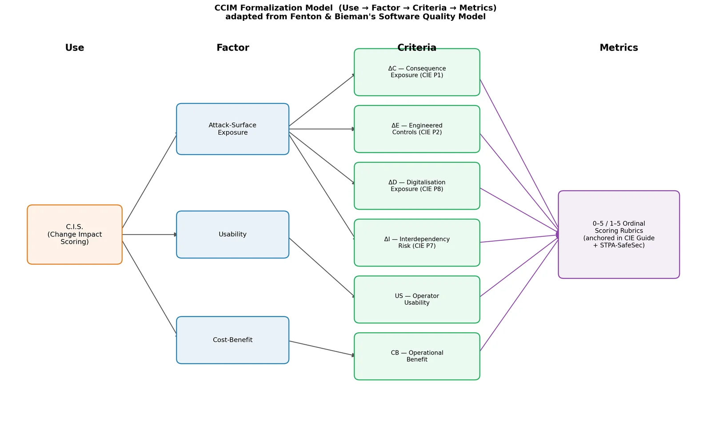
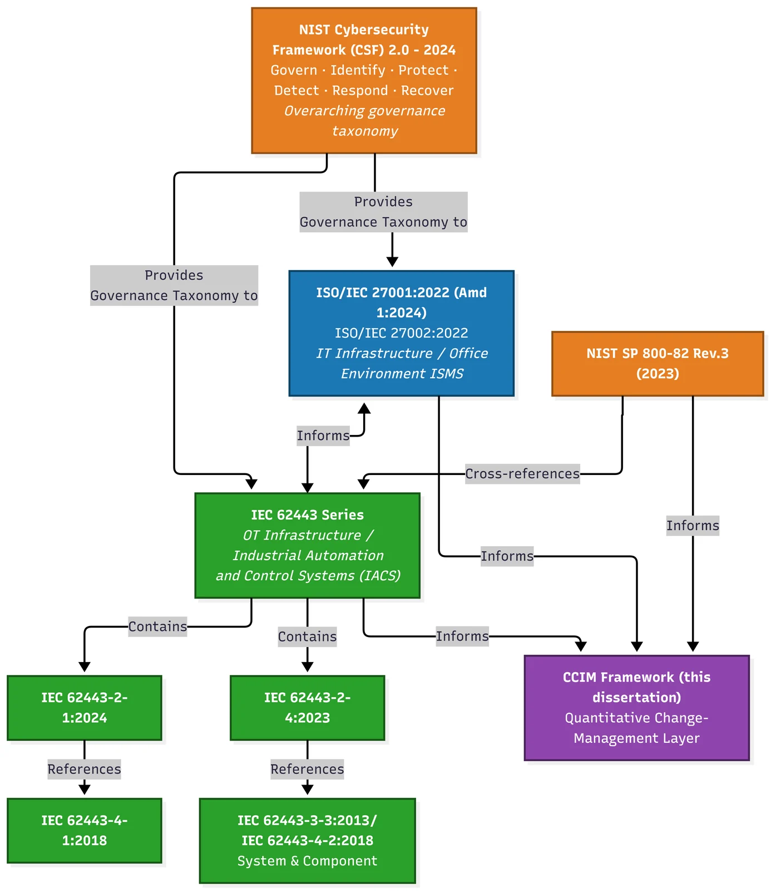
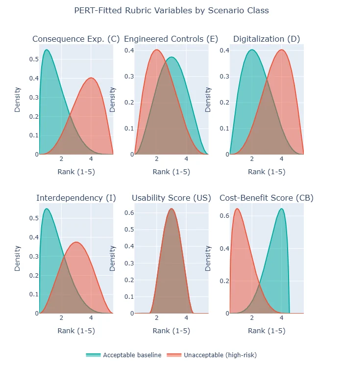
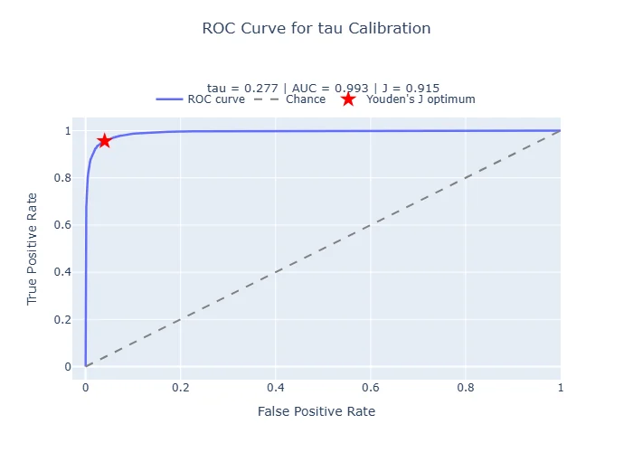
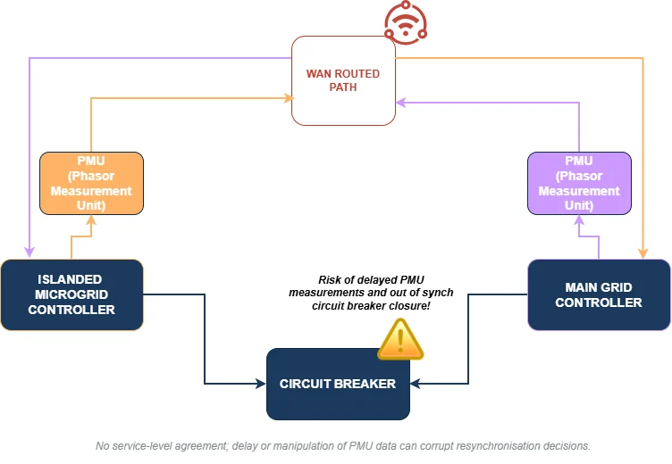
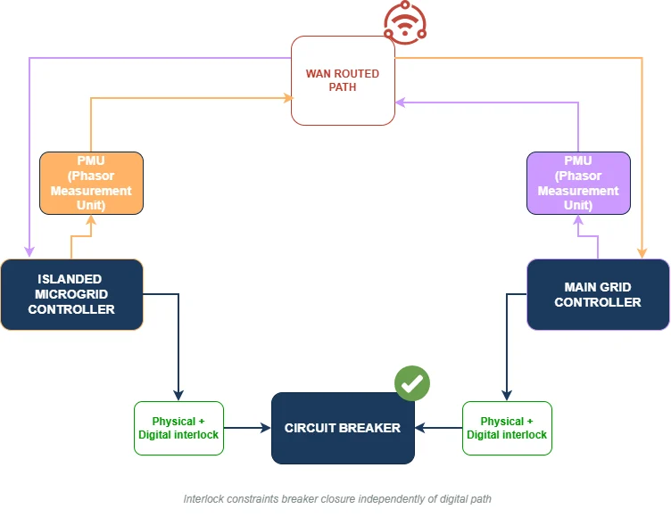
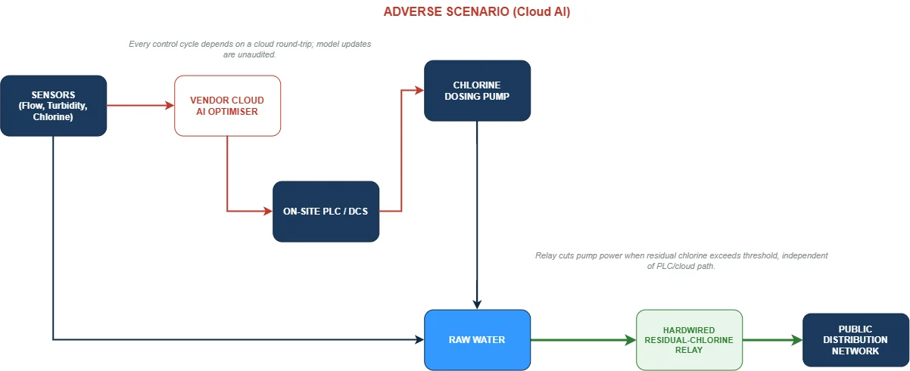

MSc dissertation · OT and ICS security
Quantitative OT Change Management
A research framework for making proposed changes to operational technology easier to assess, explain and compare.
Overview
A change to an industrial system can alter its attack surface, but conventional reviews do not always make the reasoning behind an approval easy to compare. My dissertation explored a structured, CIE-informed way to assess proposed changes in critical infrastructure.
The framework turns assessed change scenarios into a score and compares it with a threshold calibrated from a labelled set of 22 scenarios. It is a research prototype, not an operational approval system.
My contribution
- Formalised the assessment model and its relationship to relevant OT security and safety standards.
- Used the Analytic Hierarchy Process to derive four criterion weights, then checked their consistency.
- Implemented PERT-based uncertainty modelling and Monte Carlo calibration in Python.
- Applied the method to microgrid and water-treatment case studies, including an interlock mitigation and an AI dosing optimiser.
How it works
The criteria are weighted using AHP. The resulting weights are 0.467, 0.277, 0.160 and 0.095, with a consistency ratio of 0.011.
For each scenario, PERT distributions with λ = 4 model the assessed inputs. Repeated sampling produces a score distribution, which is compared with the calibrated threshold.
The 22 labelled scenarios comprise 15 unacceptable and 7 acceptable cases. The selected threshold was approximately 0.277; the simulated ROC AUC was approximately 0.993, with Youden's J approximately 0.915.
Key decisions
Make uncertainty visible
Choice: Represent uncertain assessments with PERT distributions rather than treating every input as a single known value.
Why: Early change reviews often rely on estimates. Showing a range makes that uncertainty part of the assessment instead of hiding it in one score.
Trade-off: The result depends on the quality of the input estimates and the assumptions used to construct each distribution.
Calibrate against labelled scenarios
Choice: Use a Monte Carlo simulation with 10,000 trials per class and select a threshold using ROC analysis.
Why: This gives a repeatable way to compare the separation between acceptable and unacceptable scenarios.
Trade-off: The 22-scenario corpus is small and illustrative. The measured separation does not establish real-world predictive performance.
Connect standards rather than replace them
Choice: Structure the model around CIE-informed criteria and show how the criteria relate to existing security and safety standards.
Why: The aim was to make a review more consistent while keeping it legible to practitioners already working with standards.
Trade-off: The framework still needs validation with domain experts and a broader set of operating environments.
Results
In the microgrid case, the remote feedback change exceeded its national and manufacturing thresholds: T_N = 0.5158 against approximately 0.286, and T_M = 0.5517 against approximately 0.318.
The proposed interlock mitigation scored 0.092 and 0.1127, below the corresponding thresholds. The water-treatment AI dosing case sat close enough to its threshold to show why borderline assessments need careful review.
Limits and next steps
The model uses a small, illustrative scenario set and assigned weights. The high AUC describes this dataset and simulation, not performance on unseen industrial changes.
Next, I would review the criteria and scoring with OT engineers, test the framework against a larger independently labelled dataset, and document how assessors should handle borderline scores.
Project images
Select an image to view it at a larger size.














Tools and methods
Figures and results are drawn from my dissertation report. The reported scores are research findings from the study dataset, not operational recommendations.